Семінари · журнал «ДентАрт» 2014 №4 (77)
Міжнародний осінній семінар ДентАрт 2014. Аполлонія-драйв
12-13 вересня у Полтаві в конференц-залі Навчального центру «Аполлонія» відбувся семінар «Аполлонія-драйв». Складні часи фільтрують наносне і залишають найважливіше, тому в нинішньому році формат семінару — це свого роду звітний концерт у музичній школі: ми хочемо показати, чому навчилися, який шлях пройдено, з чого ми починали...
Системна реставрація зубів композитом
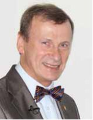
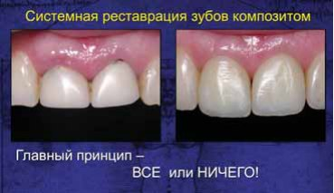
Сергій Радлінський (Україна)
При динамічному спостереженні стоматолог часто стикається зі станом зношеності, розбалансованості зубощелепної системи. А кожне нове вузькоспрямоване втручання лише фіксує стан прикусу. Усунення стертості вимагає системної реконструкції. І хоча в прямій реставрації важко провести глобальну реконструкцію, що пов'язано з тривалістю роботи при масованому втручанні, у клініці «Аполлонія» склалася практика, коли один лікар працює з одним пацієнтом кілька днів. Такий підхід дає переваги, про які в доповіді Сергія Радлінського ішлося на прикладі трьох клінічних випадків системного відновлення зубів. До цього алгоритму в клініці дійшли, стикаючись з необхідністю компенсаторних заходів при стертості зубів. За такого системного підходу на відновлення зубів однієї щелепи відводиться кілька днів. Головний принцип такого відновлення — все або нічого. Цей стандарт передбачає, що все відновлення виконується за чотири приїзди пацієнта в клініку.
Перший візит, діагностичний, дозволяє зафіксувати стан до лікування і провести заходи з планування втручань. У цей візит виготовляється термопластична капа, яка зупиняє деградацію ріжучих країв і жувальної поверхні, дає м'язам сигнал про нову висоту. Причому у такої капи немає завдань, як у суглобової шини, — позиціонувати нижню щелепу щодо верхньої. Ця позиція буде визначатися власне відновленими зубами пацієнта. Адже форма зубів визначає прикус і позицію суглобів.
Під час другого візиту, приблизно через місяць, виконується реставрація всіх верхніх зубів. Вона починається з відновлення ікол, оскільки ікло — основа зубного ряду. Після реставрації верхніх ікол переходять до реставрації верхніх бічних зубів. Коли роз'єднання між зубами у фронтальній ділянці, яке пов'язане з висотою бічних зубів, отримане, можна братися до формування піднебінної поверхні і, відповідно, корекції ріжучого краю передніх верхніх зубів.
Через місяць — відновлення зубів нижньої щелепи, які є носіями оклюзійної кривої — кривої Шпеє. Відновлення починається з бічних зубів, причому цього разу такої кардинальної зміни висоти, як у перший візит, не відбувається. Після цього іклами замикається іклове ведення і нижніми різцями — прикус. Виготовляється нова захисна капа в новій формі. Через місяць пацієнт і лікар мають зустрітися на контроль. Слід повторити діагностику, як при першому відвідуванні. Це дозволить звірити результат. Ще через місяць — контрольний візит. Обов'язковий контрольний візит через місяць дозволяє уточнити оклюзійні співвідношення, виявити стійкі суперконтакти, дискомфорт у м'язах, поставі і т. д.
Слід зазначити, що тривалість візиту залежить від ступеня стертості. Складні зуби, які вимагають спеціального втручання (керамічні коронки, литі вкладки, ендодонтичне переліковування) можуть виноситися на окремі візити. З непрямими реставраціями складність полягає в тому, що наявність лабораторного етапу не дозволяє виготовити їх за дуже короткий термін. Сучасні САD/CAM технології частково вирішують такі проблеми. Але зазвичай у непрямих реставраціях закладено певний дизайн без урахування вихідної форми, оскільки анатомічні орієнтири нівелюються препаруванням. Пряма реставрація дозволяє відтворювати форму, властиву конкретному пацієнтові, орієнтуючись на збережені елементи: форму горбків, площин, напрямних скатів.
Поєднання композитних і жорстких керамічних реставрацій у межах одного прикусу може призвести до ситуації, коли кераміка стає джерелом патологічної оклюзії, і незважаючи на відсутність клінічних проявів, м'язи будуть прописувати собі нові шляхи, в обхід суперконтактів. Через це в клініці робиться заміна кераміки на композит при відновленні окремих зубів або використовується низькотемпературна кераміка в мостовидних конструкціях, в коронках на імплантатах, що часто ускладнює і подовжує лікування.
У середньому тривалість такого системного відновлення — близько 3-5 місяців. Контрольні візити обов'язкові раз на рік. Звичайно, композит стирається, це залежить від того, як використовуються ці зуби, наскільки розвинений бруксизм. Стоматолог не може усунути фоновий стресовий фактор, який формує бруксизм. Лікар може лише змінити реставрацію і дати шанс, щоб бруксизм зник. Рішення про реновацію горбків реставрації приймається при стиранні реберець і горбків. Така необхідність може виникнути через 5 років, хоча термін служби, який ми закладаємо для реставрації, — 10 років. Через 10 років у нас є право замінити композит повністю, але часто в цьому немає необхідності.
Сергій Радлінський закінчив виступ цитатою з Девіда Вінклера: «Чим Бог відрізняється від стоматолога? Бог не думає, що він стоматолог!» Лікар повинен усвідомлювати: чим більше стоматологічних втручань, тим гірше пацієнтові. Невтручання може бути більшим благом.
Через ендодонтію — до успішної реставрації
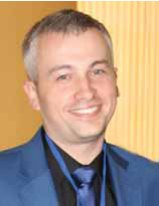
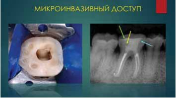
Станіслав Геранін (Україна)
У лекції йшлося про ендодонтичне лікування через призму майбутньої реставрації. Ми говоримо ендодонтія — маємо на увазі реставрацію. Якісна ендодонтична підготовка — основа успішного лікування усієї стоматологічної патології. Причина всіх проблем в ендодонтії — інфекція. Існують основні нефізіологічні шляхи проникнення інфекції — це ятрогенні перфорації. Виникають вони при створенні ендодоступу, при недотриманні техніки препарування кореневого каналу, при неправильному препаруванні кореневого каналу перед штифтуванням. Виконання ендодоступу необхідно проводити з урахуванням карти дна порожнини зуба: фісури, утворені валиками дентину, що мають темніший відтінок, завжди закінчуються устями кореневого каналу.
Вік мікростоматології торкнувся і галузі ендодонтичного лікування, але слід враховувати, що спроба збереження тканин не завжди веде до адекватної ендодонтичної підготовки. Родоначальниками мікродоступу стали Дейвід Кларк і Джон Кадемі, які розробили інструменти для мікроінвазивного доступу, головна мета яких — прямолінійний доступ без надлишкового препарування цервікального дентину, що дозволяє зубові функціонувати як єдиному цілому, без ризику виникнення мікротріщин. Без збільшення і гарної візуалізації у піднутреннях може залишатися органічний компонент і надалі призводити до розгерметизації ендопломби і реставрації. Інструментальна обробка впливає на прогноз ендодонтичного лікування кореневого каналу. Шилдер сформував основні принципи обробки кореневих каналів: кореневий канал повинен бути безперервної конусності зі збереженою первинною анатомією, розміром та положенням апікального отвору.
Революція в ендодонтії настала з впровадженням нікель-титанових інструментів. Нині вже не відбувається революційних змін, швидше модифікація наявних на ринку продуктів, і неважливо, якими інструментами ви користуєтеся, успіх залежить від віртуозності ваших рук. Безліч досліджень засвідчили, що використання ротаційних інструментів призводить до утворення тріщин у кореневому каналі. Де-Деус і Марко Версіані провели дослідження, засновані на даних мікрокомп'ютерної томографії, частоти утворення мікротріщин у дентині при порівнянні ротаційних і реципрокних систем. Вони встановили, що незалежно від того, яка система використовується, тріщини діагностуються.
Вертикальна фрактура кореня — це друга група нефізіологічного проникнення інфекції. Причиною її виникнення є травма при жувальних навантаженнях вітальних і невітальних зубів або прояв самостійних фрактур на поверхні кореня після ендодонтичного втручання. Причому фрактури постендодонтичні мають строго вертикальне поширення, на відміну від травматичних, які розташовуються горизонтально. До хворобливих відчуттів частіше призводить бактеріальна інвазія.
У класифікації на першому місці стоять тріщини в емалі, відкол бугра, тріснутий зуб, розколотий зуб, вертикальна фрактура кореня. Тріщини в емалі — найчастіше наслідок перевантажень, пов'язаних зі зміною оклюзії, і поширюються вони тільки в межах емалі без ушкодження дентину. Найчастіше такі тріщини сполучаються з абфракціями і ерозіями зубів. Тріснутий зуб — це клінічний прояв розколу іноді вітального зуба, симптомами якого є гострий біль при навантаженні, швидкоминучий біль від холодного при вітальності пошкодженого зуба. Для діагностики можна застосовувати фарбування карієс-маркерами, оцінювати больові відчуття від натискання на зуб, використовувати трансілюмінацію. Інструмент Тус Слот/Tooth Slot за рахунок спеціальної форми дозволяє навантажити окремо кожен бугор, а трансілюмінація може дати розуміння повної чи неповної тріщини. Лікування тріснутого зуба, а саме герметизація в адгезивній техніці, завжди є компромісом. Якщо тріщина має тенденцію до поширення — зуб видаляють, оскільки через відсутність герметизму виникають запальні процеси не лише підтримуючих, а й навколозубних тканин, викликаючи резорбцію. Чим швидше скомпрометований зуб буде замінено на імплантат, тим імовірніший успіх імплантологічної підготовки.
Шилдер говорив: «Не важливо, що внесли в кореневий канал. Важливо, що ви звідти прибрали».
Успіх ендодонтії залежить від герметичності реставрації. Кішен О'Ніл сказав, що структура зуба і склад зубних тканин чудово адаптовані до функціональних вимог порожнини рота і перевершують за властивостями будь-які штучні матеріали.
Скловолоконне армування реставрацій
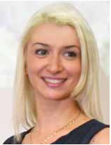
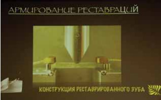
Ольга Пономаренко (Україна)
Висока прогнозованість реставрації вимагає використання збільшення, яке уберігає оператора від помилок і розширює його можливості під час маніпуляцій. Сучасні матеріали також розширюють можливості стоматолога, до таких матеріалів належить скловолокно, яке може застосовуватися в різних клінічних ситуаціях.
Адгезивне шинування — це терапевтичний спосіб іммобілізації рухливих зубів, котра є обов'язковою процедурою в комплексному лікуванні захворювань пародонту або посттравматичній реабілітації зубів. Шинування з'єднує всі рухливі і стійкі зуби для стабілізації. Скловолоконні стрічки, які використовуються, можуть бути плетеного або односпрямованого типу орієнтації волокон. Шинування може бути екстракоронковим або інтракоронковим. При екстракоронковому шинуванні препаруванням розкриваються безпризмові шари емалі, що допомагає впровадженню адгезивного агента. Інтракоронкове шинування передбачає препарування твердих тканин зубів. Неінвазивне шинування непросоченим скловолокном триває близько 40 хвилин, оскільки далі йде етап просочування адгезивним компонентом скловолокна необхідної довжини. З просоченим скловолокном працювати простіше і швидше, але і той, і інший вид волокна адаптується на шар текучого композиту і обов'язково перекривається наповненим композитом. Постортодонтична ретенція за допомогою скловолокна — ще один вид класичної ретенції ортодонтичного лікування. Непомітність і естетичність ретейнера — одна з важливих переваг скловолоконних ретейнерів. Ретейнер нічим не відрізняється від екстракоронкових шин, і всі маніпуляції виконуються як при шинуванні. Полегшений гігієнічний догляд, малоінвазивність, естетичність, комфорт, легкість виконання — основні позитивні властивості.
Хрестоподібне армування скловолокном запобігає тріщинам зубів, які зазнали ендодонтичного втручання. Армування волокном має нульову втрату твердих тканин для пацієнта. Це допоможе утримати стінки і стане запорукою зміцнення дна порожнини зуба. Також можна армувати вітальні зуби при травматичній оклюзії. У таких зубах можна провести армування по тріщині у відпрепарованій порожнині.
Адгезивні мостоподібні конструкції часто застосовуються у повсякденній стоматологічній практиці. Ця методика має свою історію. Працюючи на кафедрі дитячої стоматології, С.В. Радлінський виконував такі конструкції на ортодонтичному дроті. Адгезивна мостовидна конструкція дозволяє повністю усунути або відстрочити непряме протезування. Вони можуть стати тимчасовим або умовно тимчасовим варіантом протезування при тривалих етапах імплантації. Щадне ставлення до зубних тканин робить цей метод привабливим для клініцистів. Лектор відзначила унікальність професії стоматолога: «Ми можемо змінювати життя людей, даємо привід частіше усміхатися».
Екстремальні реставрації: штифтувати, не штифтувати
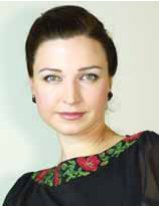
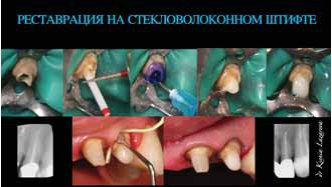
Ксенія Лазарєва (Україна)
У цій доповіді було розглянуто, в яких випадках необхідно застосовувати штифтові конструкції, а в яких можна використовувати безштифтові композитні, металеві вкладки і вкладки, армовані скловолокном.
Великий вибір підходів у прямій і непрямій реставрації не вирішує повністю основних проблем більшості матеріалів: полімеризаційного стресу при прямих композитних відновленнях і недостатньої еластичності непрямих конструкцій. Щоразу при виборі конструкції ми повинні відштовхуватися від клінічної збереженості тканин надальвеолярної частини. У таких випадках зручно користуватися класифікацією Фаїни Цуканової. При першому типі зруйнованості, коли збережений ферул (над’ясенна частина близько 2 мм), оператор має можливість як прямого, так і непрямого відновлення, при другому і третьому типі, коли зуби зруйновані на рівні або нижче рівня ясен і збережені стінки, для непрямих конструкцій передбачається хірургічне подовження, пародонтальні операції або ортодонтичне витягування зуба, однак такі корені при певних вихідних клінічних ситуаціях можна відновити і в прямій техніці. Не можна при відсутності ферула і циркулярного дентину виготовляти нееластичні жорсткі вкладки з металу, цирконію через ризик розколу. Корені з руйнуванням у зоні біфуркації підлягають видаленню. Вважається, що девітальний зуб слабший, ніж вітальний, і вимагає застосування матеріалів з підвищеними характеристиками міцності, однак такі матеріали (метал, циркон) не зміцнюють зуб, а роблять його менш гнучким. Зуб при девіталізації втрачає гідродинамічний ефект пульпи, пропріоцептивну чутливість, які не лише дозволяють тканинам протистояти навантаженню, але й дозують його; тому зуб перестає бути органом, стає скорше біоімплантатом, і саме тому слід максимально боротися за збереження пульпи.
До факторів, що впливають на успіх постендодонтичного відновлення, належать: обсяг твердих тканин, особливо в цервікальній ділянці, плановане навантаження на зуб, тип оклюзії і обтураційний матеріал кореневої пломби. Штифтувати під ортопедичні конструкції необхідно завжди, оскільки штифти роблять зуб менш гнучким і збільшують стійкість до бічних навантажень. Однак штифти не зміцнюють зуб, а лише створюють умови для ретенції. Штифтові конструкції бувають еластичні (модуль пружності до 40 ГПа) і нееластичні (понад 40 ГПа). Виживаність конструкції буде вищою, якщо модуль пружності вкладки або штифта збігатиметься з модулем пружності дентину, а коронки — з модулем пружності емалі. Металеві куксові вкладки рекомендовані при протезуванні каркасними коронками, вимагають наявності ферула і не мають хімічного зв'язку з коренем. У бічних зубах слід надавати перевагу розбірним вкладкам. Жорсткі внутрішньоканальні штифти мають інші фізико-механічні властивості, концентрують тиск і ривками передають його на періодонт. Також вони є важелем і, вигинаючись, передають навантаження на стінки кореня, причому чим менше поле для адгезивного зв'язку, тим слабша конструкція. Еластичні штифти дозволяють провести відновлення за одне відвідування, вони позбавлені корозії, біологічно сумісні з тканинами зуба, і при їх використанні зберігається еластичність конструкції.
Штифт фіксується не менше, ніж на половину кореневого каналу, і товщина кореня по периметру повинна бути не менше 2 мм. При фіксації еластичних штифтів необхідно застосовувати спеціальний активатор, який компенсує несумісність хімічних композитів для фіксації штифтів з фотополімерними адгезивами. Компанія Дентсплай створила зручну систему Кор енд Пост Систем/Core & Post System, всі компоненти якої допомагають спростити процедуру установки внутріканальних штифтів і відновлення кукси, в якій усі продукти розміщені у відповідності з основними етапами лікування, що дозволяє організувати і прискорити процедуру штифтування.
Сергій Радлінський запропонував альтернативу реставрації на штифті — композитну вкладку в прямій адгезивной техніці. Однак можна вдосконалити таку вкладку за допомогою скловолокна, з якого формується індивідуальна штифтова культьова вкладка, яка краще протистоїть трансверзальним навантаженням. Такі вкладки гарні при великій конусності кореневого каналу або значному дефекті кореня, наприклад, після вилучення вкладки, неадекватного ендодонтичного лікування і неможливості забезпечення фіксації стандартного штифта. Сама індивідуальна скловолоконна вкладка може фіксуватися окремим етапом так само, як скловолоконні штифти, або безпосередньо на композит, армуючи стінки кореня. Вибір методики відновлення залежить від клінічної ситуації та навичок оператора: при ідеальному перерізі кореневого каналу можна використовувати стандартні штифти, якщо ж переріз кореневого каналу нестандартний, можна йти шляхом непрямої реставрації або прямої реставрації, армованої скловолокном.
Стоматологія — екстремальна професія. Стоматолог ризикує своїм часом, репутацією, пацієнт ризикує здоров'ям, вкладеними в лікування коштами, часом. І від рішень, що будуть прийняті, залежить, який результат чекає на обох у майбутньому.
Системний підхід до оздоровлення стоматолога
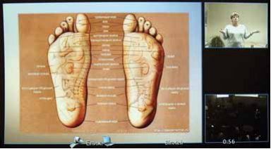
Інгріда Маркане (Латвія)
Незвичний формат доповіді з Риги для семінару ДентАрт від одного з авторів журналу підтвердив, що відстань — не перепона для нових знань. Інгріда Маркане — психолог за другою освітою — відкрила таємниці взаємозв'язків тілесного і духовного у щоденній практиці стоматолога.
Тіло як творіння природи відображає нашу індивідуальність. У ньому записано все: досвід життів людей, які дали нам життя, досвід нашого попереднього життя і нагромаджений досвід у цьому житті. Якщо, дивлячись у дзеркало, ми не сприймаємо себе, то ми не сприймаємо щось у своєму мисленні, підході до життєвих ситуацій, модулі життя. Тіло лише демонструє, що відбувається навколо нас. Необхідні зусилля, щоб не потрапити в ілюзорний капкан і не створити відмінний від нашої сутності візуальний образ. Своїми думками ми виділяємо енергію, завдяки якій створюються аура і простір, в яких проявляється наша індивідуальність. Коли життєвих сил багато, людина не хворіє. Але хвороба — не покарання. Вона свідчить, що енергія розтрачена, необхідно зупинитися і провести аналіз: хто ти насправді?
Кожен орган пов'язаний в єдину систему, тіло чудово саморегулюється, і якщо ми резонуємо з навколишнім середовищем, природою, своїми душевними повеліннями, то ми не хворіємо. Щоб не розтрачувати життєву енергію, важливо навчитися зчитувати інформацію. Є техніки аналізу інформації за райдужкою ока, вушними раковинами, долонями, п'ятами. Стоматологи можуть навчитися зчитувати інформацію із зубів. Зуби, як і інші органи, пов'язані з організмом в цілому. Зуб — це той енергетичний потенціал, з яким народжується людина, а щелепи — це генетично позначені форми соціуму. Чим ворожіше соціум ставиться до індивідуума, тим гірше співвідношення обох щелеп. Існує таблиця Юріса Вецвагарса, де показано, з якими органами пов'язаний той чи інший зуб. Це дає розуміння, чому такий важливий конкретний зуб, який ми лікуємо.
Те, як ми ставимося до профілактики стоматологічних захворювань, лікування зубів, стоматолога якої кваліфікації ми вибираємо, характеризує наше ставлення до хвороби. І лише сама людина може обрати, рухатися по похилій площині вниз чи прямо. Але і від стоматологів потрібен зваженіший підхід до лікування. Нині можна спостерігати повальне захоплення імплантологією. Це важливий розділ стоматології, але превентивне видалення зубів, за які ще можна боротися, доведення пацієнта до беззубої щелепи — це зрада щодо людини та її здоров'я.
Нюанси моделювання зубів з композиту
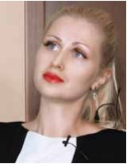
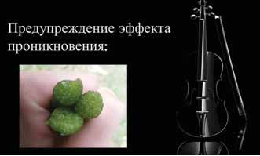
Наталя Синіцина (Україна)
Перш ніж розпочати висвітлення теми, лектор запропонувала вирушити в подорож по словниках. Нюанс — від лат. хмари, ледь помітний перехід тонів; відтінок фарб у картині, який поступово посилюється або блідішає. Моделювання — це дослідження яких-небудь явищ, процесів або систем шляхом побудови і уточнення характеристик або раціоналізації способів конструювання об'єктів. Моделювання — одна з основних категорій пізнання. На перший погляд, слова нюанс і моделювання не пов'язані зі стоматологією. Але вони визначають успіх нашої професії, оскільки дозволяють уточнити відтінок, мінімальні відмінності, ледь помітні деталі.
Прості правила, без яких неможливий успіх в реставрації: коректне препарування, обов'язкове накладання рабердаму і адгезивна підготовка, що відповідає технологічній дисципліні. Слід звернути особливу увагу на ефект проникнення — вихід дентинного ліквору на поверхню зубних тканин, які пройшли адгезивну підготовку. Цей ефект призводить до вельми серйозних ускладнень, наприклад, чутливості зуба при навантаженні. Для запобігання ускладненням після адгезивної підготовки на поверхню дентину протягом 90 секунд вноситься і отверджується текучий композит, далі можна вносити композит звичайної щільності.
Класичні нанокомпозити мають ряд чудових властивостей: стійкість до стирання, полірованість, проте головний недолік нанокомпозитів — погане склеювання і складна адаптація. Для того, щоб компенсувати ці негативні моменти, використовується мікрогібрид звичайної щільності, наприклад, Спектрум ТіПіЕйч/Spectrum TPH відтінку A3.50 або ормокер Церам Ікс Дуо/CeramX DUO відтінку D3. Як основна і поверхнева емаль, використовується нанокомпозит Естет Ікс/Esthet X відтінків B2 і YE. Перший і головний постулат моделювання — гарне, якісне притирання композиту.
Лектор висвітлила основні тести на склеювання. Їх застосування дозволяє контролювати результат.
Один з головних нюансів роботи з композитом — дотримання робочого часу. Робочий час моделювання шару композиту близько двох міліметрів — не більше 90-120 секунд. При моделюванні жувальної поверхні важливо відтворити не лише фісури першого порядку, а й фісури другого порядку, які відіграють важливу роль при жуванні і, безумовно, у красі реставрації.
Головне завдання стоматолога — отримання ефекту, близького до природного творіння, який досяжний за умови глибоких знань анатомії зубів і зубощелепної системи в цілому.
Індивідуальне ведення професійної гігієни
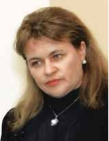
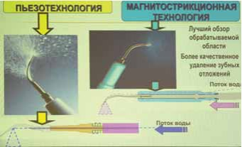
Тетяна Петрушанко (Україна)
100 років тому, в 1914 році, у США було відкрито перші школи гігієністів. Американська асоціація стверджує: чистий зуб карієсу не піддається. У 2013 році лекторові пощастило побувати студенткою в першому Європейському інституті з ультразвукової технології та скейлінгу, де навчання вели американські гігієністи. Термін «професійна гігієна» у нас у стоматології досить новий, раніше частіше вживався інший: «зняття зубних відкладень». Професійна гігієна ротової порожнини — це багатоскладова категорія, де в основі лежить мотивація пацієнта, скейлінг, індивідуальне навчання правилам особистої гігієни. Медичні аспекти мотивації полягають у переконанні пацієнта в необхідності систематичних візитів на гігієну для збереження повного стоматологічного здоров'я, причому відсутність стоматологічної патології в майбутньому і в сьогоденні зробить пацієнта здоровим соматично, забезпечить повноцінний жувальний процес, мову, соціально-психологічний комфорт. Чудовою мотивацією для пацієнта є пародонтограма, на якій можна контролювати поліпшення або погіршення, стабілізацію процесу: це допомагає оптимізувати гігієну міжзубних проміжків. Зубні відкладення — це кутикула, пеликула, зубний наліт і зубний камінь. Зубний камінь може бути різноманітним за походженням: якщо джерелом є ротова рідина, можна говорити про появу над’ясенного зубного каменю; продукт ясенної рідини — камінь під’ясенний, або сироватковий, поширений у всіх після 40 років. Однак не такий страшний органічний компонент зубного каменю, як мікрофлора, зібрана під ним. Через продукування ендо- та екзотоксинів, мікробну сенсибілізацю, вироблення протеолітичних ферментів виникає цілий комплекс судинних розладів артеріального і венозного характеру, а сам зубний камінь додатково викликає механічні ушкодження (пролежні, трофічні виразки).
Професійна гігієна необхідна всім — від новонародженого до осіб похилого віку, це основа первинної та вторинної профілактики всіх стоматологічних захворювань. Особливо уважними повинні бути лікарі при плануванні повної терапевтичної санації порожнини рота, відбілюванні зубів, хірургічних втручаннях у ротовій порожнині, імплантації зубів і протезуванні.
Другим етапом професійної гігієни є скейлінг — якісне видалення всіх зубних відкладень з усіх поверхонь зубів і обробка ясен гігієнічними засобами. За показаннями перед скейлінгом провадиться антибіотикопрофілактика, оскільки 60-90% маніпуляцій у ротовій порожнині, навіть діагностичних, можуть викликати бактеріємію. Стандарти Американської асоціації пародонтологів передбачають усім пацієнтам перед скейлінгом проводити антибіотикопрофілактику. В Україні таких стандартів не існує, і антибіотикопрофілактика призначається пацієнтам групи ризику: стан після заміни клапана серця, раніше перенесений інфекційний міокардит, серцево-судинна недостатність, вроджена патологія клапанів серця, пороки серця, після операцій на серці, ревматизм. Основними препаратами антибіотикотерапії є амоксицилін, кларитроміцин, які застосовуються за день до прийому або за годину до стоматологічних маніпуляцій, що дозволяє запобігти низці ускладнень.
Сьогодні ми маємо величезний вибір засобів гігієни, які дозволяють провести скейлінг, профілактичні маніпуляції з яснами і тканинами зубів, також є безліч способів видалення зубних відкладень, таких як фізичний, хімічний, комбінований методи. Найчастіше стоматологи використовують апаратні методи, до яких належить застосування піскоструминних апаратів. Як абразивна речовина, в таких апаратах можуть застосовуватися найрізноманітніші складові: оксид алюмінію, бікарбонат натрію, гліцин. Протипоказання до проведення повітряноабразивної обробки: обструктивний бронхіт, бронхіальна астма, емфізема легенів, індивідуальна чутливість до аерозолів, незріла емаль зуба.
Найпоширеніший спосіб зняття зубних відкладень — за допомогою пневмоскейлерів, він менш травматичний, більше рекомендований для дітей. Сьогодні існують дві технології: магнітостриктивна (Кавітрон) і п'єзоелектрична (Вектор).
Для кожного пацієнта розписується індивідуальний алгоритм гігієни ротової порожнини. Розповівши про його складові, лектор підкреслила: необхідно пам'ятати, що електрощітки рекомендуються не всім пацієнтам — хірургічне втручання, онкологічні операції, рухливість зубів третього ступеня, гіпертрофічні процеси, наявність елементів ураження на слизовій оболонці є протипоказаннями.
Професор Петрушанко побажала нам і нашим пацієнтам міцного стоматологічного здоров'я словами Пирогова: «Майбутнє належить медицині запобіжній».